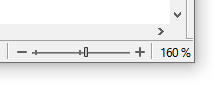
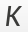
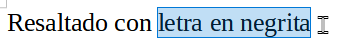
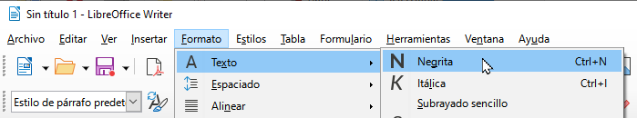

4. Texto resaltado¶
Primero abrimos LibreOffice Writer pulsando en el icono de la aplicación.

También podemos escribir la palabra "writer" en el botón de inicio de Windows y pulsar en LibreOffice Writer.
Se abrirá la ventana de LibreOffice Writer.
Ahora vamos a aumentar el factor de escala de la ventana para poder ver mejor el texto según lo escribimos.
En la parte inferior derecha de la ventana, cambiaremos el factor de escala a 160% pulsando el botón +.
En este ejercicio utilizaremos las herramientas para resaltar el texto escrito. En ocasiones necesitamos que una palabra o una frase se destaque del resto del texto y para ello disponemos de varios formatos de texto que utilizaremos a continuación.
Texto en negrita con la herramienta

Texto subrayado con la herramienta

Texto en itálica con la herramienta 
Para cambiar un texto normal a texto en negrita, primero escribimos el texto.
A continuación seleccionamos el texto pinchando con el cursor del ratón en el inicio del texto que queremos cambiar.

Después arrastramos el cursor hasta el final del texto que queremos cambiar (mientras mantenemos pulsado el botón izquierdo del ratón)
También se puede seleccionar el texto situando el cursor al comienzo del texto y manteniendo pulsada la tecla shift
 , pinchar con el ratón al final del texto que
queremos cambiar.
, pinchar con el ratón al final del texto que
queremos cambiar.Una vez seleccionado el texto, pinchamos con el ratón en la herramienta para cambiar el texto a negrita

O bien podemos elegir en el menú
Formato... Texto... NegritaTambién podemos escribir un texto en negrita seleccionando primero el botón de negrita
Luego escribimos el texto que queramos en negrita y al finalizar volvemos a pinchar el botón
para volver a escribir en formato normal.Escribe el siguiente texto en Writer.